<
Manual del Portafirmas iOS
Versión 1.6.5
El primer paso para el acceso al Portafirmas desde Apple iOS es la descarga de la aplicación desde la App Store. Para encontrarla podemos buscar por “Portafirmas @firma”.
<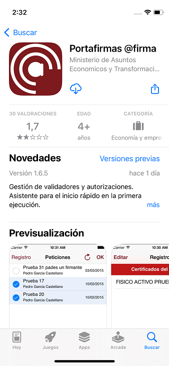
A continuación, pulsaremos sobre el icono de instalación:
<
Portafirmas iOS
El portafirmas de Asuntos Económicos y Transformación Digital es una plataforma web para la gestión del flujo de peticiones de firma que permite a sus usuarios revisar dichas peticiones, firmarlas, darles el visto bueno o rechazarlas. El ministerio dispone de dos despliegues de su portafirmas, pero también lo distribuye para que otros organismos puedan implantarlo.
La aplicación móvil del portafirmas permite el acceso a cualquier instancia del portafirmas del ministerio, o a cualquier instancia del mismo desplegada por otros organismos. La aplicación móvil permite a sus usuarios acceder y realizar las operaciones básicas sobre las peticiones de firma de dicho usuario.
Un usuario sólo podrá acceder a una instancia del portafirmas si previamente se le ha creado una cuenta para el mismo. Cualquier persona que pueda acceder al portafirmas a través de la web podrá acceder al mismo portafirmas desde la aplicación móvil.
El portafirmas móvil utiliza certificados electrónicos reconocidos tanto para el acceso a la cuenta del usuario como para la firma de sus peticiones. Estos pueden ser:
-
Certificados locales instalados en el dispositivo.
-
Certificados en la nube de Cl@ve Permanente.
Por defecto, los accesos se realizarán mediante certificados instalados en el dispositivo, pero un usuario puede activar el uso de los certificados remotos mediante la opción “Usar certificados remotos” de la pantalla principal de la aplicación móvil.
Su certificado, local o remoto, permite al portafirmas identificarle y con ello identificar su cuenta del portafirmas seleccionado. Esto quiere decir que no es necesario dar de alta este certificado en el servicio portafirmas y que, si tiene cuenta en más de un portafirmas, podrá acceder a todos ellos con el mismo certificado.
Primera ejecución
Al ejecutar la aplicación por primera vez se le mostrará al usuario la ventana de presentación y el asistente de configuración del Portafirmas móvil. Este asistente le facilitará configurar algunas de las opciones de la aplicación:
- <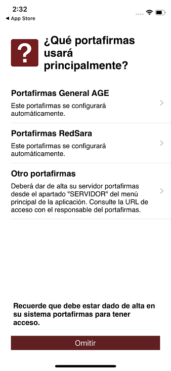Selección de portafirmas: El Portafirmas móvil le permite acceder a múltiples portafirmas y ya viene configurado con la ruta de acceso a dos de ellos. Desde la primera ventana del asistente el usuario podrá seleccionar cuál de estos portafirmas debe establecerse como el por defecto o indicar que se va a utilizar otro Portafirmas distinto. El usuario podrá posteriormente cambiar entre los portafirmas configurados y agregar otros nuevos mediante la opción “Servidores Portafirmas” del menú de la pantalla principal de la aplicación. Para saber más, consulte el apartado “4.1 Selección del servidor de Portafirmas”.
<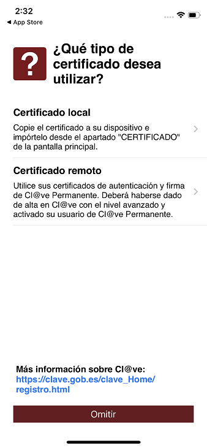
- Selección de origen del certificado: El Portafirmas móvil permite el uso tanto de certificados locales como de certificados remotos para para las operaciones de autenticación y firma. Esta pantalla del asistente le permitirá configurar si desea usar por defecto un certificado local o un certificado remoto. Para el uso de un certificado local deberá haber importado el certificado tal como se describe en el “¡Error! No se encuentra el origen de la referencia. ¡Error! No se encuentra el origen de la referencia.”. Para el uso de un certificado remoto, deberá haberse registrado en Cl@ve mediante certificado electrónico o de forma presencial (https://clave.gob.es/clave_Home/registro/Como-puedo-registrarme.html) y, posteriormente, activar su usuario de Cl@ve Permanente (https://clave.gob.es/clave_Home/ Clave-Permanente/Procedimientos.html).
Acceder al Portafirmas
El Portafirmas móvil permite conectar con múltiples Portafirmas compatibles y autenticarse y firmar tanto con certificados locales como certificados remotos. Al utilizar un certificado local, se usará este para la autenticación del usuario y la firma de las peticiones. En el caso de usar certificados remotos, se utilizará Cl@ve para la autenticación (con su certificado de Cl@ve Permanente) y FIRe para la firma (con su certificado de Cl@ve Firma).
Selección del servidor de Portafirmas
El portafirmas móvil permite tener configuradas múltiples instancias de Portafirmas. Si no se seleccionó mediante el asistente a qué Portafirmas se desea acceder, se deberá hacer en este momento. La aplicación tiene configurados por defecto los dos siguientes servidores Portafirmas:
-
Portafirmas General AGE
-
Portafirmas RedSARA
Un usuario puede acceder a cualquiera de estos portafirmas, dar de alta otros, editarlos o eliminarlos.
Desde la pantalla de inicio de la aplicación se puede seleccionar Portafirmas al que se va a acceder mediante la opción “SERVIDOR”.
<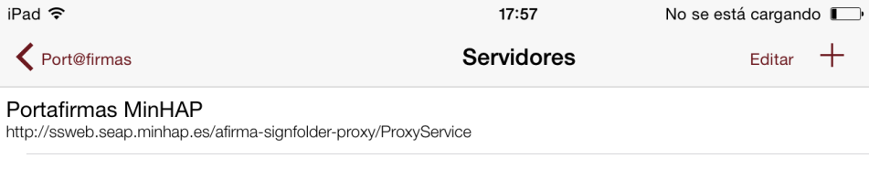
En el listado que se muestra al usuario, pulsaremos sobre el Portafirmas al que deseemos acceder y pulsaremos sobre la opción “Seleccionar” del menú contextual.
Agregar nuevo servidor
Para agregar un servidor distinto a los que vienen por defecto, pulsaremos en el símbolo ‘+’, tras lo que se nos mostrará una pantalla en la que podremos introducir el alias o nombre con el que queremos referirnos al nuevo Portafirmas y la URL del mismo. A continuación, pulsaremos el botón “Guardar”.
<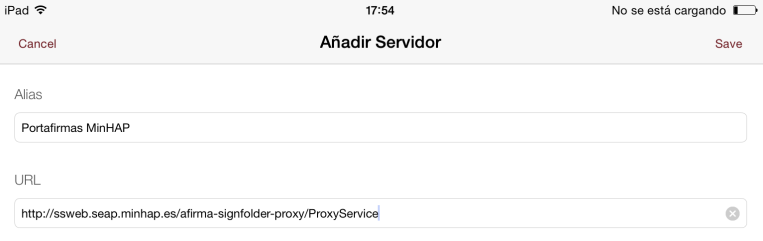
La URL de un servidor Portafirmas deberá proporcionarla el organismo responsable del mismo.
Modificar un servidor existente
Para editar un servidor que ya tenemos dado de alta en la lista de servidores, debemos pulsar en el elemento correspondiente del listado y pulsar sobre la opción “Editar” del menú contextual. En este diálogo podemos modificar el nombre y la URL del servidor. Para aplicar los cambios, pulsaremos sobre el botón “Guardar”.
Eliminar un servidor
Para eliminar un servidor portafirmas deberemos desplazar hacia la izquierda el elemento correspondiente del listado de servidores, tras lo que aparecerá un botón “Eliminar” en el lado derecho del mismo. Al pulsar sobre este botón eliminaremos el servidor.
Si eliminan todos los servidores del listado, la próxima vez que se inicie la aplicación, se agregarán de nuevo los servidores por defecto.
Acceso con certificado local
Para acceder al portafirmas seleccionado con certificado local, deberemos haber importado al dispositivo y registrado en la aplicación el certificado. La importación del certificado en la aplicación se puede hacer directamente desde la aplicación mediante la app “Archivos” o a través de iTunes y un dispositivo de sobremesa al que se conecte el dispositivo móvil. Ambas alternativas se describen en los apartados ANEXO 1 Importar certificado de usuario desde la aplicación “Archivos” (“Files”) y ANEXO 2 Importar certificado de usuario desde iTunes.
Una vez añadido un certificado a la aplicación deberemos registrarlo.
-
Desde la pantalla de inicio accederemos al apartado “CERTIFICADO” que aparecerá con el valor “Sin especificar”.
-
En esa nueva pantalla nos aparecerá el listado de certificados, primeramente, vacía. Para agregar el certificado importado, pulsaremos el símbolo ‘+’ de la esquina superior derecha.
-
En la nueva pantalla seleccionaremos el almacén importado en la aplicación, introducimos la contraseña del almacén y pulsamos el botón “Registrar”.
-
En el listado de certificados, ahora seleccionaremos el certificado registrado y la aplicación nos mostrará un mensaje con el resultado del proceso.
<<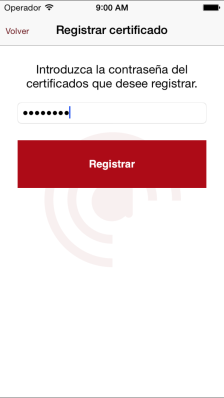<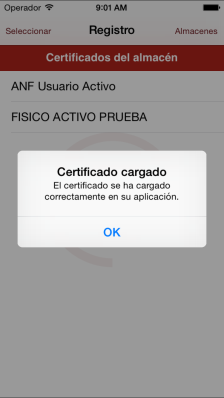
Para el uso del certificado local, comprobaremos que la opción “Usar certificados remotos” de la pantalla principal se encuentra desactivada. A continuación, pulsaremos el botón “Acceder”. Si el establecimiento de sesión es correcto, el usuario será redirigido a la pantalla de peticiones pendientes de firmar.
Advertencia: El certificado seleccionado es el que se utilizará tanto para la autenticación del usuario (mediante un proceso de validación realizado por el propio Portafirmas web), como para la firma de las peticiones. Por este motivo, se recomienda que se utilice siempre un certificado de firma (no repudio) para acceder a la aplicación.
Un usuario sólo podrá acceder a un servicio de portafirmas si dispone de una cuenta en el mismo. De no ser así, se producirá un error de conexión.
Eliminar un certificado local
Para eliminar uno de los certificados importados en la aplicación, desde la pantalla de selección de certificados a la que se accede desde la pantalla principal, arrastraremos el certificado hacia la izquierda. En el lado derecho del elemento debe aparecer la opción “Eliminar” con la que se puede eliminar el certificado.
<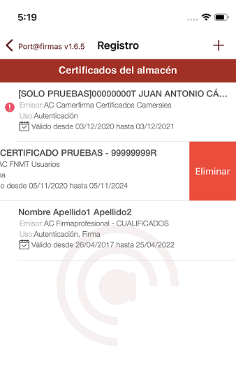
Acceso con certificado remoto (Cl@ve Permanente)
Para acceder al portafirmas seleccionado con certificado remoto, deberemos habernos dado previamente de alta en Cl@ve y activar Cl@ve Permanente. Puede obtener más información sobre los procedimientos necesarios en:
https://clave.gob.es/clave_Home/clave.html
Para configurar el Portafirmas móvil para el uso del certificado remoto, marcaremos la opción “Usar certificados remotos” de la pantalla principal de la aplicación. A continuación, pulsaremos el botón “Acceder”.
<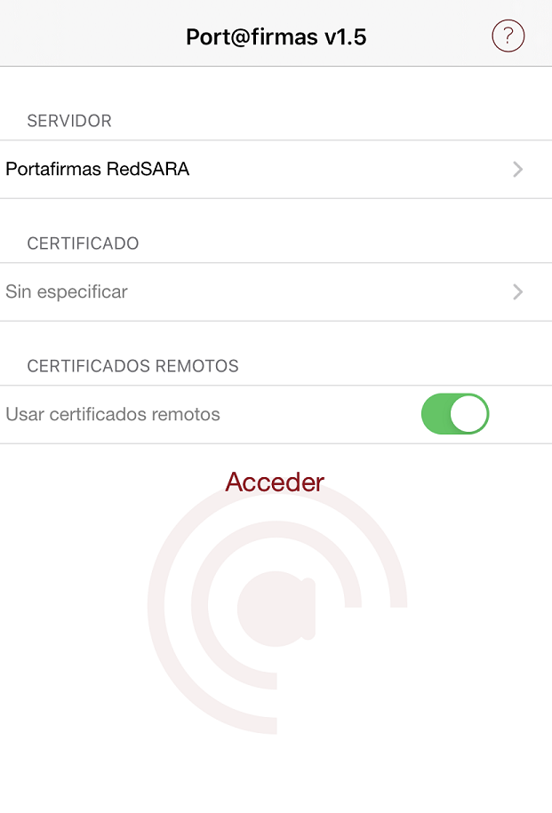
La aplicación móvil accederá a su cuenta de portafirmas con certificado remoto por medio de Cl@ve Permanente que necesita que el usuario introduzca su DNI y los datos de autenticación. La aplicación mostrará para esto la página web de Cl@ve Permanente en donde el usuario podrá insertar su DNI, la contraseña de Cl@ve y, si procede, el código enviado a su teléfono por SMS.
<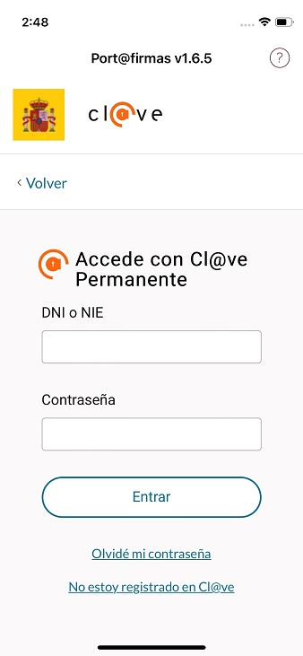
Advertencia: No todos los servicios de portafirmas permiten el uso de certificado remoto. Consulte con el proveedor de su portafirmas si tiene dudas acerca de la disponibilidad de esta opción.
Selección de rol
En caso de que el usuario tenga permitido el acceso con distintos roles, tras acceder a la aplicación, se mostrará un listado con las distintas opciones disponibles.
<
El usuario podrá seleccionar el rol con el que desea acceder a la aplicación. Una vez dentro, podrá cambiar de rol a través de la opción Roles de la pantalla de configuración de la aplicación.
Bandejas de peticiones
Al entrar en el portafirmas, se accede a la pantalla que muestra la bandeja de peticiones que el usuario tiene pendientes de procesar. Las peticiones que puede ver y las acciones que puede realizar sobre ellas dependerá de si accedió como usuario firmante o como validador de otro usuario. Posteriormente el usuario podrá cambiar de rol desde la opción correspondiente del menú.
Acceso como usuario firmante
Se accede como usuario firmante cuando no se es validador de ningún otro usuario o cuando se selecciona expresamente en la pantalla de selección de rol.
Los usuarios firmantes verán por defecto el listado de peticiones que tiene pendiente de firmar o aprobar. Si hubiese peticiones próximas a caducar, se mostrarían al principio del listado.
El usuario puede utilizar las opciones de la parte inferior del listado para cambiar entre los listados de peticiones pendientes, rechazadas y firmadas. En estos listados se pueden encontrar, respectivamente, las peticiones de firma y visto bueno que están pendientes de procesar, las que se han rechazado y las se han procesado correctamente.
<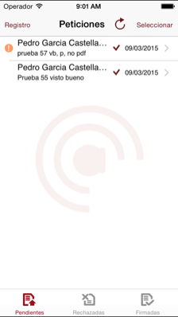
En este listado se muestran al usuario las peticiones pendientes recibidas, quién la envío, el asunto del que trata, la criticidad y si la petición requiere firmar (<) o aprobación (<). Se puede actualizar el listado arrastrando la lista hacia abajo cuando ya nos encontramos en la parte superior o mediante la opción de actualizar del menú. Para ver el detalle de una petición se puede pulsar sobre la misma.
Debe tenerse en cuenta que, si el usuario tiene validadores asignados, por defecto sólo se le mostrarán las peticiones que estos hayan validado previamente. Para ver todas las peticiones dirigidas a él, el usuario debe acceder al apartado de filtros mediante la opción “Filtrar” del menú de la pantalla, activarlos y seleccionar el tipo de petición “Todos los tipos”.
Para procesar las peticiones de este listado, debemos pulsar el botón “Seleccionar” situado arriba a la derecha. Veremos cómo, después de hacerlo, la lista se nos muestra en modo edición de manera que podemos seleccionar las peticiones que queramos procesar. Una vez seleccionada alguna petición los botones inferiores de “Firmar/Visto Bueno” y “Rechazar” se habilitarán para que podamos pulsarlos y procesar como queramos las peticiones seleccionadas.
<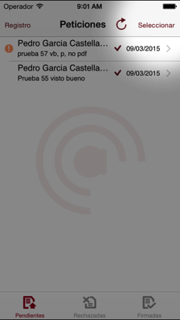 <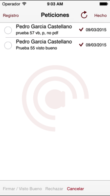 <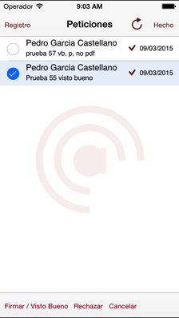
Fig. 3.1 Fig. 3.2 Fig. 3.3
Cuando un usuario pulsa el botón “Firmar/Visto Bueno” de la parte inferior de la pantalla después de seleccionar una o más peticiones se le mostrará el número de cada tipo y se le pedirá confirmación antes de procesarlas.
También puede rechazarlas mediante el botón “Rechazar”. Cuando se rechacen peticiones se permitirá al usuario indicar el motivo por el que se rechazan. Indicar este dato es opcional.
Al procesar una petición, si el proceso se realiza correctamente, la petición pasa a la bandeja de “Firmadas”. Al rechazar peticiones, estas pasan a la bandeja de “Rechazadas”.
Pueden visualizarse las distintas bandejas mediante los botones inferiores del listado de peticiones: Pendientes, Rechazadas y Firmadas.
Firma de peticiones con certificado local
La firma de peticiones con certificado local se realiza con el mismo certificado que se haya seleccionado para el acceso al Portafirmas. El uso de este certificado es transparente para el usuario.
Firma con certificado remoto
La firma de peticiones con certificado remoto se realiza con el certificado de firma de Cl@ve Firma del usuario. Para hacer uso de este certificado se redirige al usuario a la página de FIRe desde el que puede seleccionarlo. Seguidamente deberá introducir su contraseña de Cl@ve y el código recibido por SMS a su número de móvil asociado.
<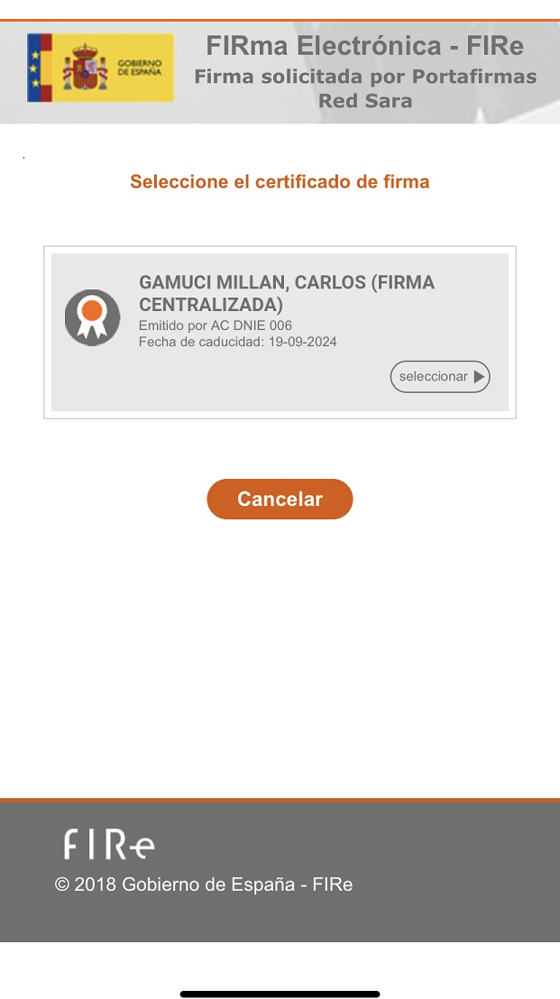 <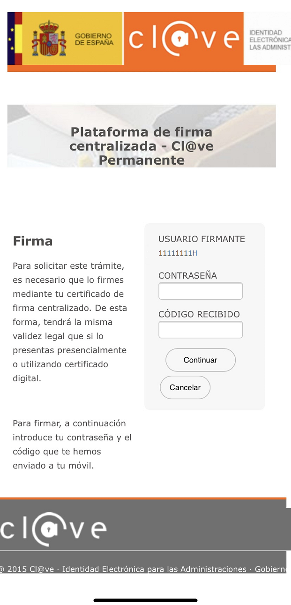
Acceso como usuario validador
Cuando un usuario accede como usuario validador no ve las peticiones que se le envían a él, sino las peticiones enviadas al usuario del cual es validador. Su función es la de revisar estas peticiones y validarlas para que así aparezca en la bandeja de peticiones pendientes de la persona responsable de darles visto bueno o firmarlas.
<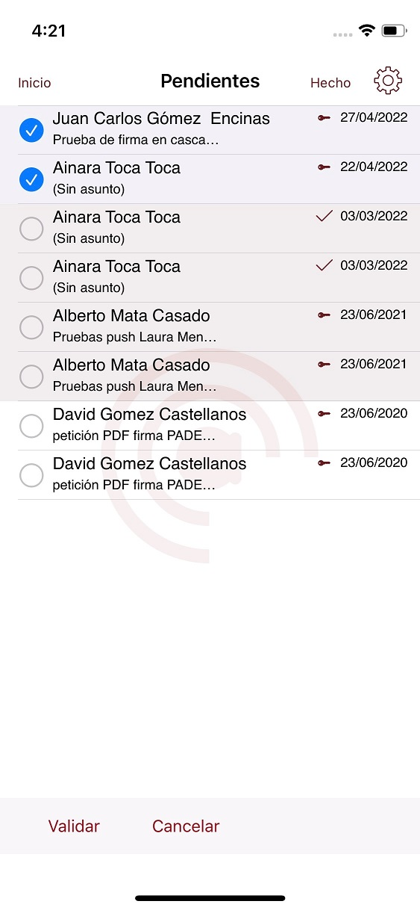
El usuario validador ve por defecto únicamente las peticiones que están pendientes de validar. Si fuese necesario ver también las peticiones ya validadas, puede cambiarlo mediante el filtro “Tipo de petición”, accesible mediante la opción “Filtrar” del menú del listado de peticiones pendientes. Se puede actualizar el listado arrastrando la lista hacia abajo cuando ya nos encontramos en la parte superior o mediante la opción de actualizar del menú.
Filtrado de peticiones
Desde cualquiera de las bandejas de peticiones podemos activar los filtros para que se muestren solamente aquellas peticiones que cumplan las condiciones establecidas en esos campos. Esto puede hacerse desde el panel de configuración de la pantalla del listado de peticiones. Este diálogo también permite seleccionar el criterio de ordenación del listado.
<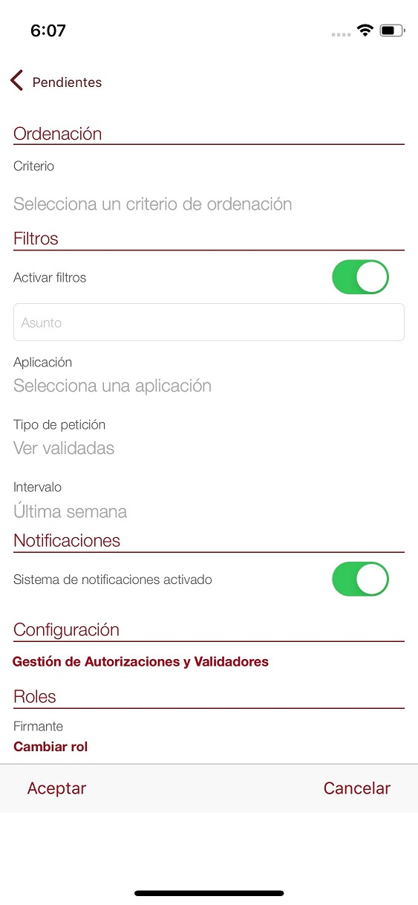
Detalle de petición
Pulsando directamente en una petición accederemos a una pantalla para ver su información. Entre ella veremos quién la envía, el asunto, referencia, la fecha de envío, la fecha de caducidad (si aplica), la aplicación desde la que se envía, el motivo de rechazo (si aplica), los remitentes y el mensaje asociado.
Desde esta pantalla también se puede firmar, dar visto bueno, rechazar o validar una petición pendiente. Para hacerlo, sólo debemos pulsar sobre el botón superior derecho y después sobre la opción deseada.
<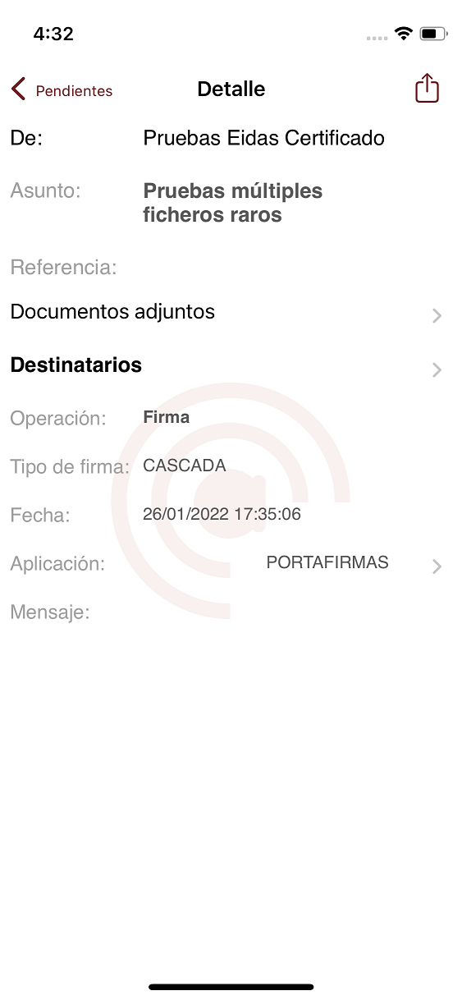 <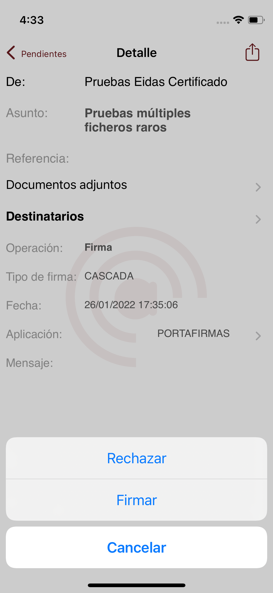
La opción “Remitentes” muestra el flujo de vistos buenos y firmas que seguirá la petición, quienes deberán procesarla y la operación en cuestión a realizar (Firma o Visto Bueno). Cuando se indica que la firma de una petición es “en cascada”, se indica que deberá procesarla uno de los individuos de una línea de firma antes que la petición llegue a los de la siguiente línea. Cuando la petición sea “en paralelo” los individuos de las distintas líneas de firma podrán procesarla en paralelo.
<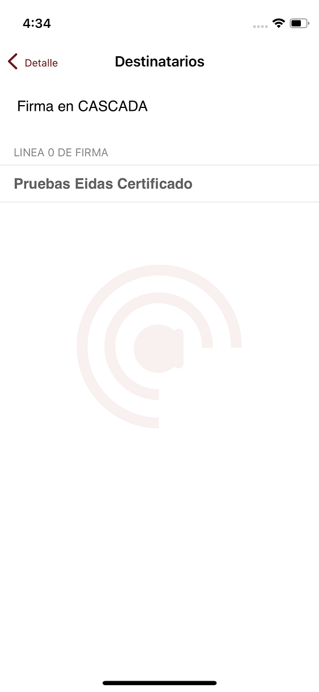
La pestaña “Documentos” contiene los documentos que se van a firmar y, si existen (y la versión del Portafirmas web al que se conecta lo soporta), los documentos anexos a la petición, los cuales no se firman nunca, pero pueden ayudar al usuario a determinar si debe firmar los documentos. Estos documentos se podrán visualizar a través de la propia aplicación si tiene un formato compatible.
<<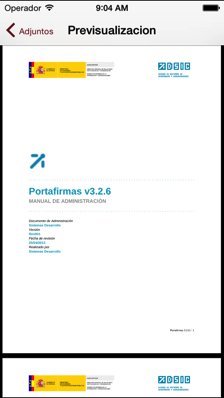
Gestión de autorizaciones y validadores
La aplicación móvil permite gestionar las autorizaciones y los validadores del usuario cuando se accede a una versión del Portafirmas que soporte esta funcionalidad. De ser el caso, podremos hacerlo accediendo a la pantalla de configuración del listado de peticiones y pulsando en la opción “Gestión de Autorizaciones y Validadores”.
Gestión de autorizaciones
El listado de autorizaciones muestra todas aquellas autorizaciones que hemos concedido o que nos han concedido a nosotros, independientemente del estado en el que se encuentren.
De cada autorización del listado podemos ver:
-
Mediante el primer icono, si la autorización se ha enviado (<) o recibido (<).
-
Mediante el segundo icono, el estado de la petición: activa (<), revocada (<) o pendiente de aprobar (<).
-
El emisor o receptor de la autorización, según si la hemos recibido o enviado, respectivamente.
-
La fecha de revocación de la autorización si ya no está activa o si está activa, pero tiene fecha de caducidad.
<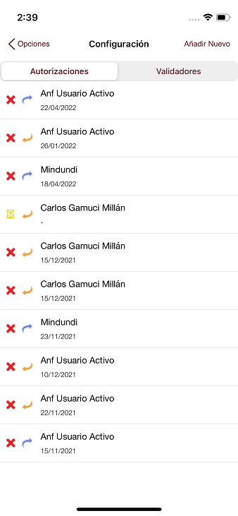
Al pulsar sobre una de las autorizaciones podremos ver el detalle de la misma: quien la envía o recibe, el estado, fecha de inicio y fin y descripción. En caso de tratarse de una autorización pendiente o activa, también aparecerán los botones que nos permitirán realizar las distintas opciones disponibles sobre ella:
-
Cancelar/rechazar aquellas peticiones activas o las peticiones pendientes que hayamos enviado nosotros.
-
Aceptar o revocar las peticiones pendientes que nos hayan enviado.
<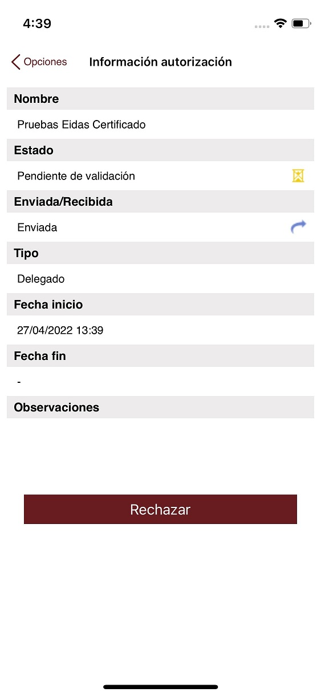 <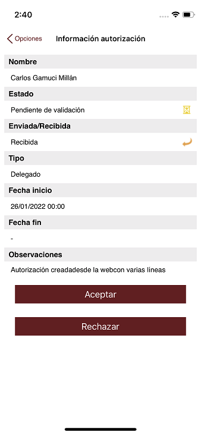
Se puede dar de alta una nueva autorización pulsando el botón “Añadir nuevo” cuando se esté mostrando el listado de autorizaciones. A continuación, se nos mostrará un buscador desde el que podremos buscar y seleccionar al usuario al que queremos autorizar. La búsqueda puede realizarse mediante nombre o DNI.
<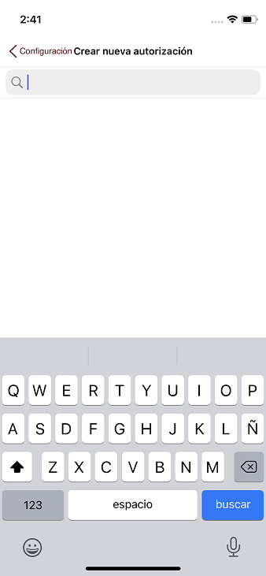
Una vez seleccionado el usuario, podremos configurar los datos relativos a la autorización:
-
Fecha y hora de inicio. Si no se indican, se utilizará la fecha y hora actuales.
-
Fecha y hora de caducidad. Si no se indican, la autorización no caducará.
-
Tipo de autorización: delegado o sustituto.
-
Observaciones opcionales.
<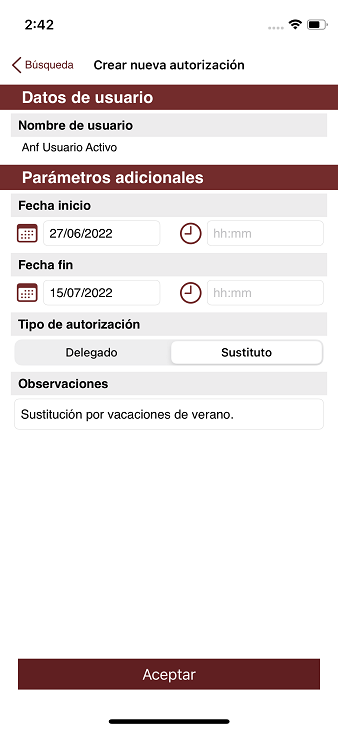
La autorización se crea al pulsar en el botón “Crear autorización”, pero no estará activa hasta que el usuario al que se ha enviado la acepte.
Gestión de validadores
El listado de validadores muestra los usuarios encargados de validar las peticiones que recibimos antes de que se nos muestren en nuestra bandeja de peticiones pendientes. El Portafirmas móvil no distingue entre validadores generales o aquellos que sólo gestionan aplicaciones concretas.
<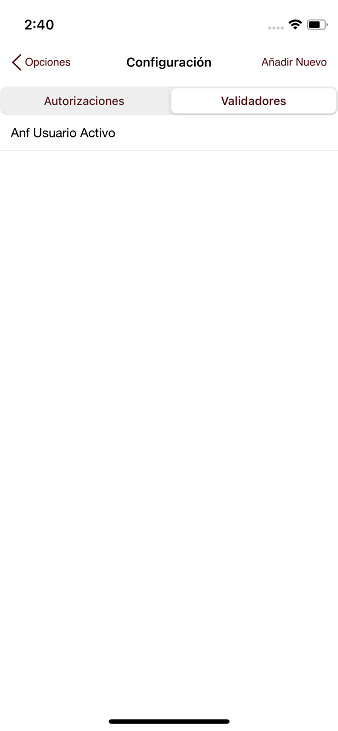
Se puede dar de alta a un nuevo validador pulsando el botón “Añadir nuevo” cuando se esté mostrando el listado de validadores. A continuación, se nos mostrará un buscador desde el que podremos buscar y seleccionar al usuario al que queremos nombrar validador. La búsqueda puede realizarse mediante nombre o DNI. Al pulsar sobre el usuario en cuestión, se nos pedirá confirmación para darlo de alta como validador.
<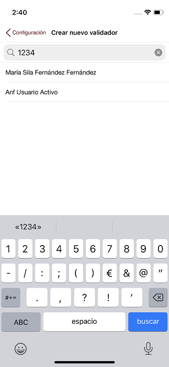
Podemos dar de baja a un validador con sólo pulsar sobre el mismo en el listado de validadores. Al hacerlo, se nos pedirá confirmación antes de darlo de baja.
Importar certificado de usuario desde la aplicación “Archivos” (“Files”)
Para importar en la aplicación un certificado desde la aplicación “Archivos” deberemos acceder al listado de certificados de la aplicación a través de la opción “CERTIFICADO” de la página principal. Seguidamente pulsaremos sobre el símbolo ‘+’ situado en la esquina superior derecha de la aplicación. Desde esta pantalla seleccionaremos el enlace “Añadir más almacenes desde Files App” (Fig. A1.1), tras lo cual se nos abrirá la aplicación “Archivos”.
Desde la aplicación Archivos podremos seleccionar el archivo PKCS#12 que contenga nuestro certificado y que tengamos en nuestro dispositivo móvil, en iCloud o en cualquier otra ubicación disponible (Fig. A1.2 y A1.3). Al hacerlo, el archivo aparecerá disponible en el listado de “Almacenes Disponibles” de la aplicación.
<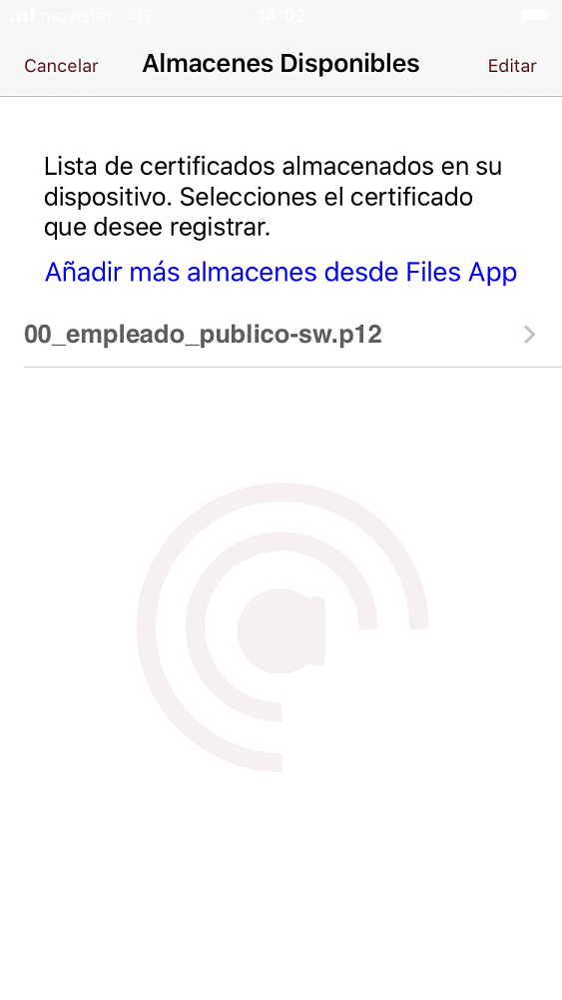 <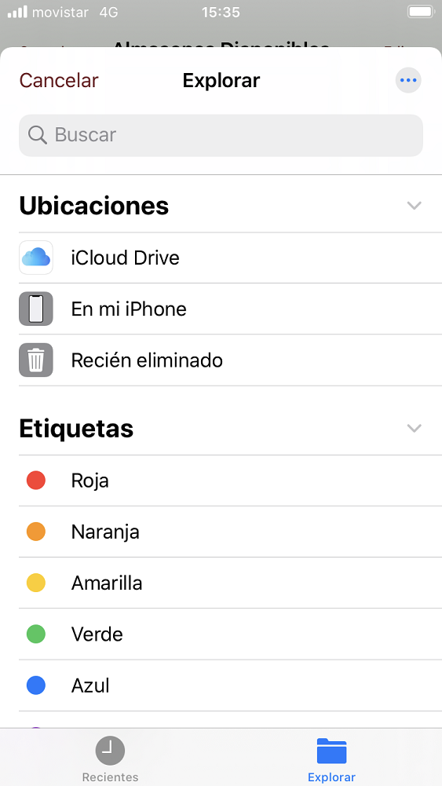 <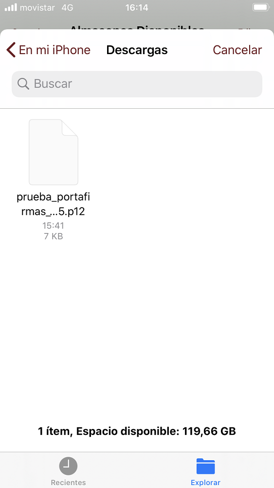
Fig. A1.1 Fig. A1.2 Fig. A1.3
Una vez importado el archivo de almacén, se deberá registrar el certificado en la aplicación como se describe en el apartado 4.2 Acceso con certificado local.
Importar certificado de usuario desde iTunes
Para importar a la aplicación un certificado desde iTunes, tendremos que conectar por cable nuestro dispositivo móvil con el equipo macOS o Windows en el que tengamos instalada la aplicación. Desde iTunes se debe seleccionar el dispositivo conectado (Paso 1), navegar hasta la pestaña de “Aplicaciones” (Paso 2) y posicionarnos en el final de la página.
Una vez ahí deberíamos ver la aplicación Port@firmas en la parte izquierda de la pantalla dentro de la columna “Aplicaciones”. Si la seleccionamos (Paso 3), la columna de la derecha se actualizará para dejarnos añadir archivos. Utilizamos el botón “Añadir” (Paso 4) para agregar los almacenes de certificados (ficheros .p12/.pfx) que queramos.
<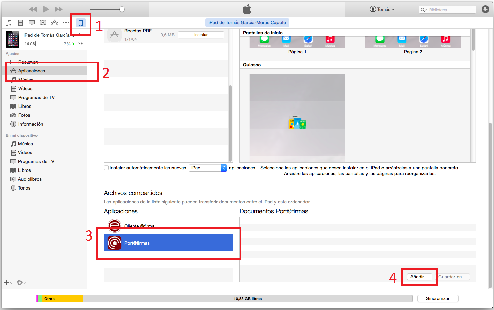
Una vez importado el archivo de almacén, se deberá registrar el certificado en la aplicación como se describe en el apartado 4.2 Acceso con certificado local.
<
Esta obra está bajo una licencia Creative Commons Reconocimiento-NoComercial-CompartirIgual 3.0 Unported.